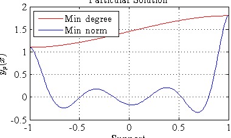
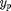
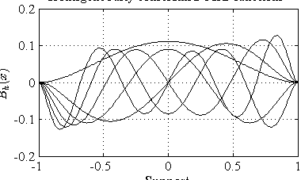
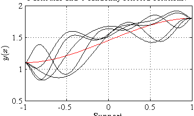
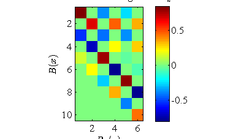
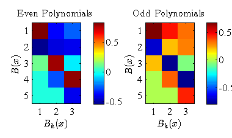
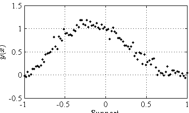
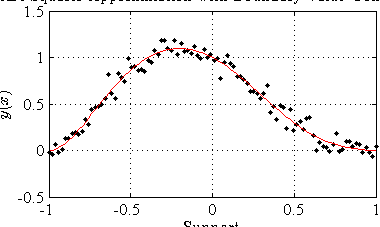

Introducing Constrained Polynomials
The discrete orthogonal polynomial toolbox (dopBOX) supports two dirrerent mechanisms for defining and generating constrained polynomials.
(c) 2013 Paul O'Leary and Matthew Harker Institute for Automation University of Leoben A-8700 Leoben Austria
URL: automation.unileoben.ac.at Email: office@harkeroleary.org
Contents
Two Constraining Mechanisms
The two approached differ in terms of how derivative constraints are defined and implemented.
1) The original mechanism provided by the fundtion dopConstrain computes an estimate for the derivatives based on linear combinations of the values of the basis functions, i.e., local approximations to the derivative are computed. This approach is good when many points along the support are available. However, for a low number of points on the support there may be significant errors between the estimate for the derivative and the derivative. This effect can be particularly visible at the ends of the support.
2) The function dopGenConstrained offers an alternative approach based on analytical derivatives. The function dop generates a set of basis functions and their derivatives:
[B, dB] = dop( x );
B is a mtrix containing the basis functions and dB contains the analytical derivatives of B. The coefficients (spectrum) of y wrt. The basis functions B are computed as:
c = B' * y;
and the least squares approximation to y, i.e. yHat is computed as,
yHat = B * c;
Given the analytical derivatives of the basis functions we can also compute dyHat, i.e. the first derivative of yHat,
dyHat = dB * c;
These are analytical derivatives, not discrete approximations. It is now possible to find an explicit relationship between the derivatives of the function and the derivative of the coefficients.
M = B' * dB;
Which implies
dyHat = dB * c = B * M * c;
If a large number points are being used and a high degree of polynomials is required, then it may be necessary to use a local approach.
M = B' * dB and D = dB * B';
Consequently,
M = B' D B.
Since B is orthonormal the condition number of M is equal to the condition number of D. Consequently, when it becomes necessary to use a local approximation for D it will also be necessary to have a local approximation for M. This is simply implemented using the function dopDiffLocal to generate a local differentiating matrix DL. Then ML = B' * DL * B. Both the global and local approaches are supported by dopGenConstrained
Recommended usage: Use the dopGenConstrained function which generates the constrained basis functions via M, only use a local approximation when the condition number of M becomes a problem. Consequently, this will require the evaluation of the condition number of M if problems with numerical accuracy are to be avoided.
Aim of this Script
The aim of this script is to give an introduction to constrained systems and their solutions. Such systems occure, for example, in initial-, and boundary value problems. In such cases the constraints are imposed to ensure that there is a unique solution to a differential equation. Constrained solutions also occure in measurement problems, such as the monitoring of structures. Some information on this type of pronlem can be found at: http://dx.doi.org/10.1109/TIM.2011.2180969.
Here we will demonstrate constraints and how solution spaces can be determined.
close all; clear all; % % Set some defaults % FontSize = 12; set(0,'DefaultaxesFontName','Times'); set(0,'DefaultaxesFontSize',FontSize); set(0,'DefaulttextFontName','Times'); set(0,'DefaulttextFontSize',FontSize); set(0,'DefaultfigurePaperType','A4'); set(0,'DefaultTextInterpreter', 'latex');
Define the Vector x
We start be defining the x values at which the problem is to be solved.
nrPts = 200; % % Generate the a uniform vector of x values. % x = dopNodes( nrPts, 'Gramends');
Defining Constraints
The function dopgenConstrained offers a simple interface for defining constraints. A general approach to constraints is taken, this makes the tool most versitile. A constraint is defined by three values t = [n, a, b].
1) The first value, i.e., defines the degree of the derivative involved, for example, a value constraint has n = 0, a first derivative constraint has n = 1 and a constraint on the second derivative would have n = 2.
2) The second value, a, defines the position of the constraint, i.e., x = a, is where the constraint is enforced.
3) The third value define the value of the constraint, i.e. D^(n) y(a) = b.
Multiple constraints can be concatinated for form an array T of
constraints.
T = [t1; t2; t3; etc. ].Now let us consider the example of a doubly held beam, but with a vertical shift from 1.1 to 1.8 between the start and end of the beam. These are two value constraints, i.e., of type y(a) = b:
t1 = [0, x(1), 1.1]; t2 = [0, x(end), 1.8]; % % In addition the beam has zero derivatives at both ends. These are % first order derivative constraints % t3 = [1, x(1), 0]; t4 = [1, x(end), 0]; % % Concatinate the triplets to form an array which defines all % the constraints. % T = [t1; t2; t3; t4]; %
Computing the Particular Solution and Homogeneous Basis Functions
The only thing now open is to define now many basis functions we wist to have returned.
nrBfs = 10;
The function dopGenConstrained computes a particular solution y_p and determines a set of basis functions Bh such that the homogeneous solution y_h = Bh * \beta. In this manner the possible solutions to y are of the form: y = y_p + y_h = y_p + Bh * \beta.
[ypMD, Bh, S] = dopGenConstrained( x, nrBfs, T );
%
The Particular Solution
The particular solution is not-unique, this is logical, since there would otherwise be no degrees of freedom for a solution. The procedure dopGenConstrained computes two different particular solutions;
1) A minimum degree solution, i.e., a polynomial function of minimum degree which fulfils the constraints (the default return values - ypMD).
2) In the structure S and addition solution is returned, i.e., the minimum norm solution ypMN.
Additionally extract the minimum norm solution from the structure S
ypMN = S.ypMN;
Here the minimum degree and minimum norm psrticular solutions are displayed.
fig2 = figure; plot(x, ypMD, 'r'); hold on; plot(x, ypMN, 'b'); xlabel( 'Support' ); ylabel( '$$y_p(x)$$' ); title('Particular Solution'); grid on; legend( 'Min degree', 'Min norm', 'Location', 'NorthWest'); %
The Homogeneously Constrained Basis Functions
In addition to the particular solution , the function dopGenConstrained also returns a set of orthonormal basis functions which fulfil the constraints in a homogeneous manner. Consequeltly any vector y = y_p + Bh * \beta, where \beta is a vector of coefficients also fulfil the constraints.
Now let us view the basis functions.
fig3 = figure; plot( x, Bh, 'k'); xlabel( 'Support' ); ylabel( '$$B_h(x)$$' ); grid on; title('Homogeneously constrainsd basis functions'); %
Here we demonstrate that any linear combination of the homogeneous basis functions may be added to the particular solution and will still fulfil the constraints.
Define the number of random tests
nrTests = 5; [nBh, mBh] = size( Bh ); % % Generate a matrix of random coefficients % betas = randn( mBh, nrTests ); % % Compute the corresponding solutions. % Ys = repmat( ypMD, 1, nrTests ) + Bh * betas; % fig4 = figure; plot(x, ypMD, 'r'); hold on; plot(x, Ys, 'k'); xlabel( 'Support' ); ylabel( '$$y(x)$$' ); title(['Particular and ',int2str(nrTests),' randomly selected solutions.']); grid on; %
Relationship between B and Bh
The relationship between B and Bh is given by, Bh = B * R where R is an orthonormal upper triangular matrix. This ensures that the constrained polynomials are ordered in the same manner as in B, i.e. from lowest to highest degree.
Extract and view R
R = S.R; % fig5 = figure; imagesc( R ); axis image; colorbar; % xlabel('$$ B_h(x) $$'); ylabel('$$ B(x) $$'); title('Coefficients Relating $$B$$ to $$B_h$$');
Note the checkerboard pattern. This is a consequence of the fact that the even (odd) degree constrained polynomials are only functions of the even (odd) degree unconstrained basis functions. This also yields a consideration for later improvement of evviciency be seperatuing the solutons for odd and even postions of the solution.
Now seperate the even and odd portions of R.
[nR, mR] = size( R ); % ro = 2:2:nR; co = 2:2:mR; % re = 1:2:nR; ce = 1:2:mR; % Ro = R( ro, co ); Re = R( re, ce ); % fig5 = figure; subplot(1,2,1) imagesc( Re ); axis image; colorbar; xlabel('$$ B_h(x) $$'); ylabel('$$ B(x) $$'); title('Even Polynomials'); subplot(1,2,2) imagesc( Ro ); axis image; colorbar; xlabel('$$ B_h(x) $$'); ylabel('$$ B(x) $$'); title('Odd Polynomials'); %
Least Squares Constrained Approximation
Given a particular solution and a set of orthornormal homogeneously constrained basis functions, it is simple to compute a constrained least squares approximation. This is demonstrated in with the following code.
Load a test data set. This data set is a noisy observation of a of a doubly held beam. That is, the beam displacement at the ends is zero as is the first derivatives. Note the data is on the support (-1 >= x <= 1). The task now is to perform a least squares fit which satisfies the corresponding constraints. This is a least squares approximation problem with bpoundary value constraints.
load constrainedData; % % Show the data prior to fitting % fig6 = figure; plot( x, y, 'k.'); hold on; xlabel( 'Support' ); ylabel( '$$y(x)$$'); grid on;
Define the necessary constraints
t1 = [0,-1,0];
t2 = [0, 1,0];
t3 = [1,-1,0];
t4 = [1, 1,0];
%
T = [t1; t2; t3; t4];
generate the correspondingly constrained polynomials
nRBfs = 10; % generate the first 10 basis functions
[yp, Bh, S] = dopGenConstrained( x, nrBfs, T);
Form the above call to dopGenConstrained we have a possible particular solution yp and a set of basis functions Bh wich are homogeneously constrained. With these two functions a least square approximation to y, i.e. yHat can be simply computed.
yHat = yp + Bh * ( Bh' * y );
Note in this special case yp = 0. Nevertheless, we compute the complete solution to show the correctness of the solution.
Compute the spectrum (coefficients) of y with respect to Bh.
ch = Bh' * y;
Compute the approximation for y
yHat = yp + Bh * ch;
%
If necessary we can compute the coefficients with respect to the unconstrained basis functions. All the required information is provided in the structure S. All we need are the following relationships. Bh = B * R;
Consequently, if,
ch = Bh * y = B * R * y
then
c = R * ch;
and
yHat = B * c.R is made available in the structure S as S.R.
Plot the results of the least squares approximation.
figure( fig6); hold on; plot( x, yHat, 'r'); title( 'Least Squares Approximation with Boundary Value Constraints');
Bibliography
@article{Oleary2012, author = {Paul O'Leary and Matthew Harker}, title = {A Framework for the Evaluation of Inclinometer Data in the Measurement of Structures}, journal = {IEEE T. Instrumentation and Measurement}, volume = {61}, number = {5}, year = {2012}, pages = {1237-1251}, ee = {http://dx.doi.org/10.1109/TIM.2011.2180969}
http://dx.doi.org/10.1109/TIM.2011.2180969